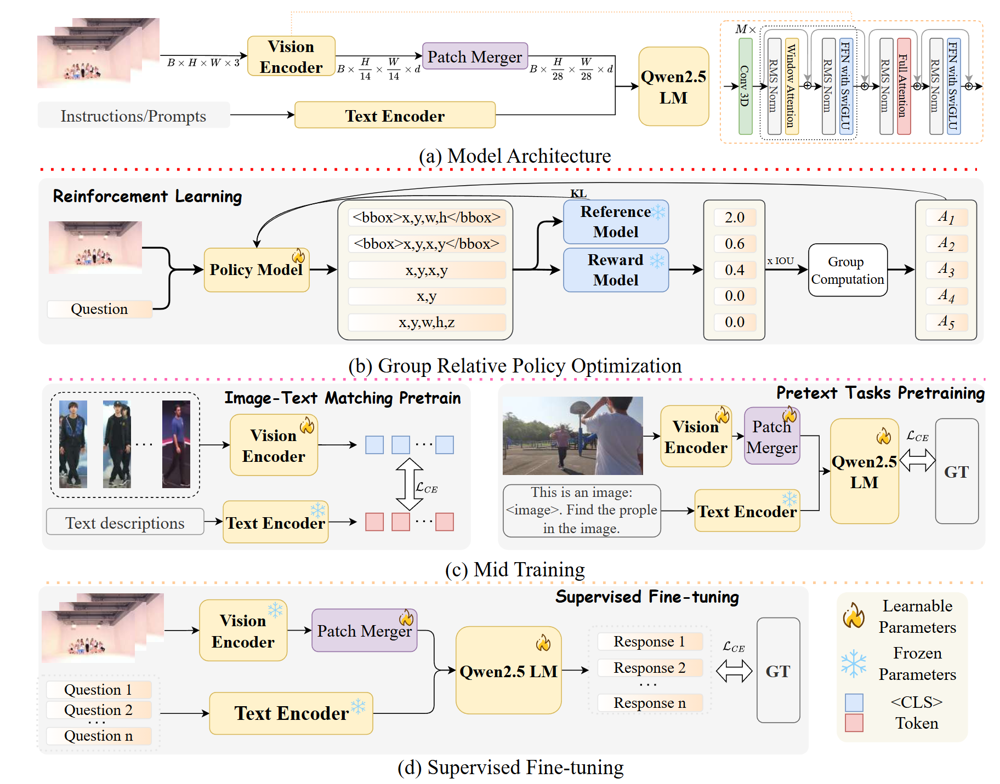
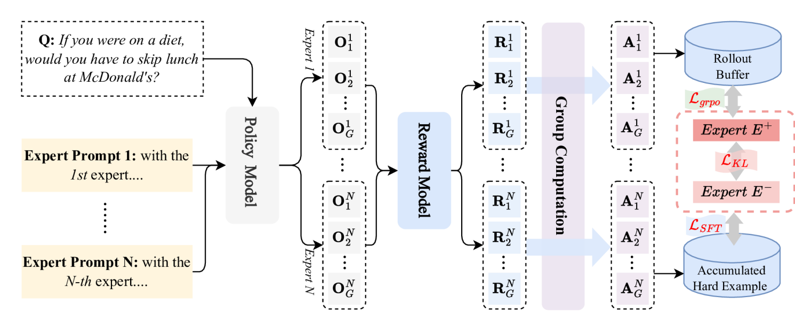
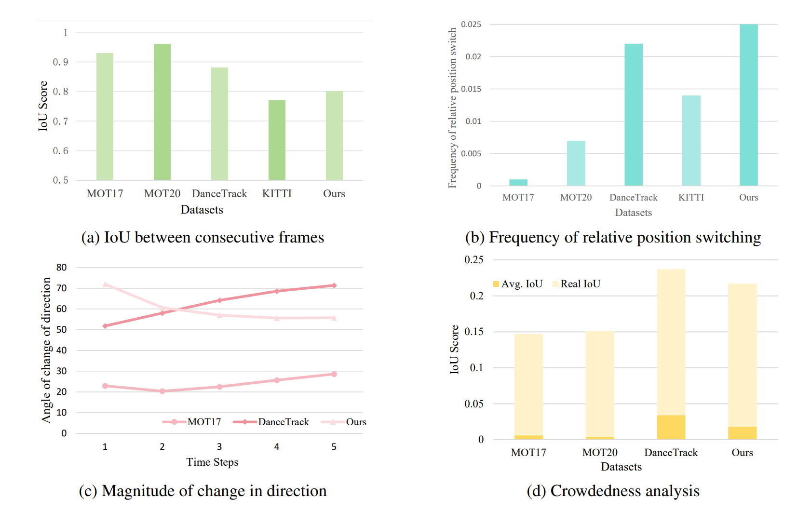
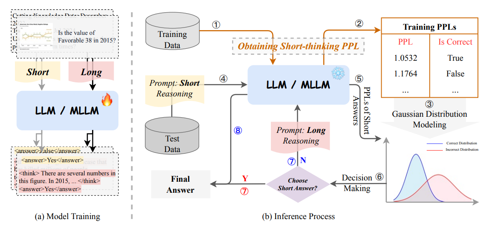
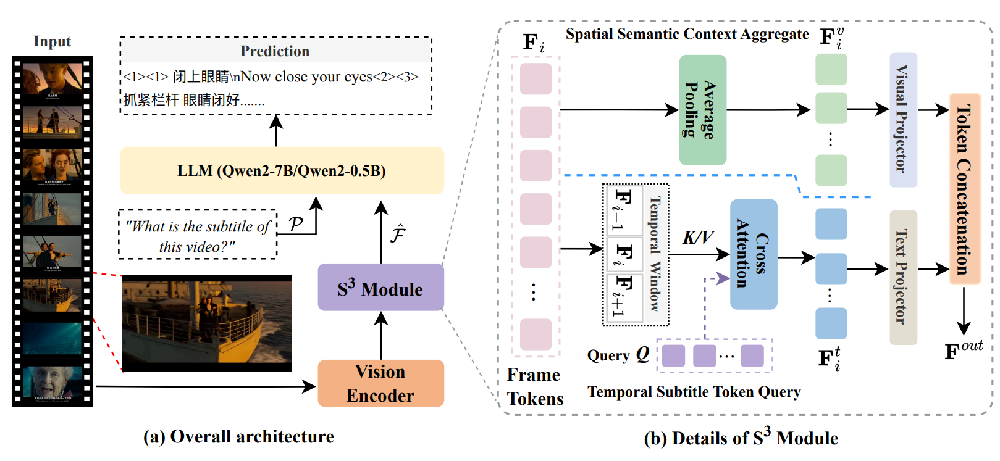
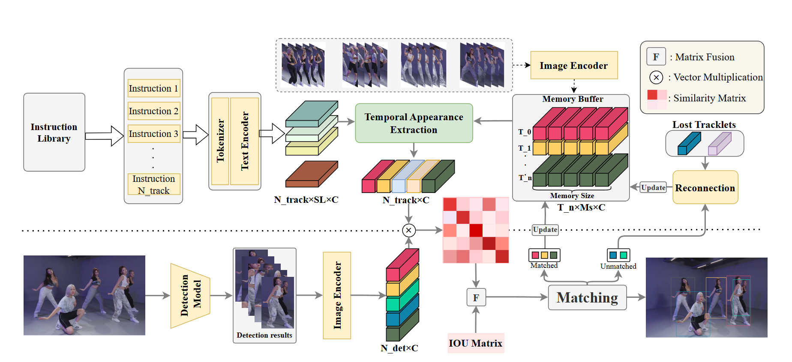
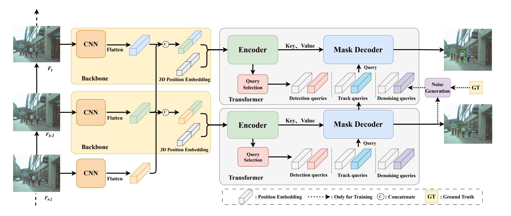

👋 关于我
你好！我是 傅腾，2000 年 4 月出生于中国山东，现居上海。我于 2026 年 6 月在 复旦大学 获得计算机科学博士学位，师从 Xiangyang Xue 教授 和 Bin Li 教授。本科就读于山东大学人工智能专业。
我的研究经历大致分为三个阶段：2024 年之前主要从事经典计算机视觉研究（目标跟踪、行人重识别、异常检测等）；2024-2025 年转向 LLM/VLM 的后训练；2026 年起研究兴趣转向智能体（Agent）相关方向。
🔍 研究方向
经典计算机视觉
目标跟踪、行人重识别（ReID）、异常检测等。
LLM/VLM 后训练
大语言模型 / 视觉语言模型的后训练。
智能体
智能体推理、决策与多模态智能体。
📰 新闻
- 2026.07 一篇论文被 ECCV 接收，感谢并祝贺所有合作者！🎉
- 2026.06 博士毕业 🎓
- 2025.11 三篇论文被 AAAI 接收，感谢并祝贺所有合作者！🎉
- 2025.09 一篇论文被 NeurIPS 接收，感谢并祝贺所有合作者！🎉
- 2025.07 发布新的 MOT 数据集 CrowdTrack，论文与代码已公开！🎉
- 2025.06 一篇论文被 ICCV 接收，感谢并祝贺所有合作者！🎉
- 2024.11 一篇论文被 AAAI 接收，感谢并祝贺所有合作者！🎉
- 2024.06 一篇论文被 ECCV 接收，感谢并祝贺所有合作者！🎉
- 2023.07 一篇论文被 ACM MM 接收，感谢并祝贺所有合作者！🎉
📚 发表论文

OmniPT: Unleashing the Potential of Large Vision Language Models for Pedestrian Tracking and Understanding
AAAI 2026



Prolonged Reasoning Is Not All You Need: Certainty-based Adaptive Routing for Efficient LLM/MLLM Reasoning
arXiv 2025



🎓 教育经历
2021 - 2026
复旦大学
计算机科学 · 博士
2017 - 2021
山东大学
人工智能 · 学士
💼 工作经历
2026.06 起
蚂蚁集团 · AI 算法工程师（即将入职）
2026.02 - 2026.05
蚂蚁集团 · 研究实习生
负责多源异构大模型相关研究。
2025.01 - 2026.01
字节跳动 · 研究实习生
从事 diffusion language model 相关研究，产出 3 篇论文（见发表论文）。
🛠️ 学术服务
会议审稿人
CVPR, ECCV, ICCV, NeurIPS, ICLR, ACL, AAAI, ACM MM
期刊审稿人
ToMM, TIP, TMM
🏆 获奖荣誉
- 复旦大学优秀博士毕业生
- 山东省优秀本科毕业生
- 山东省软件设计大赛一等奖
- 青岛博物馆优秀志愿者